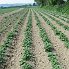
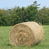
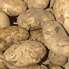
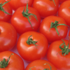
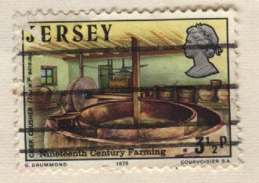
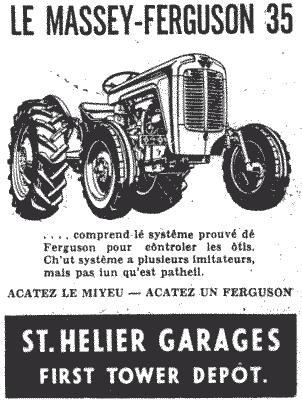
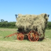
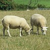

|  |  |  |  |
 |
| brîsi | to breeze |
| coquelicot! | cock-a-doodle-doo ! |
| dêfoui | to dig up (potatoes) |
| dêgraîssi la tèrre | to impoverish the soil |
| des louochies | windfalls |
| des patates au court-bouoillon | stovies |
| d'la grainne | seed |
| êloper, êtèrrer | to shake (potato stalks) |
| empreingni | to impregnate |
| èrcolter | to harvest |
| eune faûcheuse | mower |
| eune vaque à lait | dairy cow |
| faûchi | to mow |
| gliainer des patates | to pick up (potatoes) |
| graîssi | to fertilize |
| hèrchi | to harrow |
| juther coumme un tchéthtchi | to swear like a ploughman |
| l'êtablyie ès rouelles | the wheelwright's stand |
| l's assiettes | the round stones |
| la bannetinne | bantam hen |
| la bantchie | hedge |
| la barrique à cidre | the cider barrel |
| la barrique à êpu | the manure barrel |
| la bête à saie | pig |
| la bette | spinach |
| la betterave | beetroot |
| la biche | goat |
| la bîngue | the cauliflower collector |
| la boûse | cowdung |
| la brébis | ewe |
| la caboche | cabbage |
| la canne à beurre | the butter can |
| la canne à lait | the milk can |
| la cârotte | carrot |
| la chiviéthe à bras | the handbarrow |
| la chiviéthe | the wheelbarrow |
| la chiviéthe | wheelbarrow |
| la cliôthuthe | fence |
| la cotte | pigsty |
| la couême (secque) | dried cowdung |
| la couoche | sow |
| la courge | marrow |
| la dêfouithie, lé dêfouissage | harvest (of potatoes) |
| la dgèrbeuse | reaper-binder |
| la fagot'rêsse | binder (of straw) |
| la faûcheuse | mowing machine |
| la faûcil'ye | sickle |
| la faux | scythe |
| la fèrme | farm |
| la fèrme à bêtes | cattle-farm |
| la flieur | flower |
| la f'naison | haymaking |
| la forte tèrre | heavy soil |
| la fouoyéthe | headland |
| la frouque à réchinnes | the root fork |
| la frouque à vrai | the vraic fork |
| la frouque | fork (for digging) |
| la geniche | heifer |
| la gèrche | young ewe |
| la g'linne | hen |
| la grain'nie | granary |
| la graisse | dung |
| la grand' tchéthue | the big plough |
| la grange | barn |
| la greffe | graft |
| la hêmie | five bar gate |
| la hèrche | harrow |
| la hèrchéthie | harrowing |
| la houette à houetter | the banking hoe |
| la jeunment | mare |
| la lait'tie | dairy |
| la laitue | lettuce |
| la machinne à dêfoui | the potato digger |
| la machinne à dgèrber | the baler |
| la machinne à poudrinner | the powder sprayer |
| la machinne à s'pather | the milk separator |
| la maie | dung-heap |
| la meule (d'un tou d' preinseu) | the apple crusher |
| la meule | the whetstone wheel |
| la mie | ploughed soil |
| la paille | straw |
| la pâle | straw |
| la pânnais | parsnip |
| la patate | potato |
| la pâtuthe | pasture |
| la pelle | shovel |
| la pîntarde | guinea-fowl |
| la pitchelle à vrai | the vraic anchor |
| la pliante | plant |
| la pliant'tie | planting |
| la pond'rêsse, ponn'rêsse | layer (of eggs) |
| la ponnaîson | egg-laying |
| la portée, la nichie, la câlée | litter |
| la poule | hen |
| la profonde bêque | the lifting spade |
| la quétote | sow |
| la quette | sow |
| la radiche | radish |
| la raie | furrow |
| la rande | furrow |
| la rueûque | hive |
| la sciêthie | harvest-time |
| la selle à beurre | the butter churn |
| la selle à tuthet | the rammer churn |
| la sèm'rêsse | the seed drill |
| la sèmethie | sowing |
| la sèrcliéresse | the weeder |
| la sèrpe | billhook |
| la sèrre | greenhouse |
| la s'meuse, lé s'meux | sowing-machine |
| la suidiche | swede |
| la tabl'ye à beurre | the butter worker |
| la tchéthue à brîsi | the breezing plough |
| la tchéthue à grain | the grain plough |
| la tchéthue à plianter | the planting plough |
| la tchéthue | plough |
| la tchéthuethie | ploughing |
| la tchêtinne | windfall |
| la tèrre friabl'ye | friable soil |
| la tèrre | soil |
| la tonmate | tomato |
| la touônn'nie | ploughing |
| la traithie | milking |
| la trie | sow |
| la troupe | herd |
| la vaque Jèrriaise | Jersey cow |
| la vaque | cow |
| la vieillotte | haystack |
| la vîngne dé patate | haulm (of potato) |
| la vrégie | vergée |
| labouother | to work land |
| l'agritchultuthe | agriculture |
| l'avaine | oats |
| l'av'née | straw of oats |
| l'avouôteux | harvester |
| l'avoût | harvest |
| lé bannetîn | bantam cock |
| lé bathi | the barrel |
| lé bel | farmyard |
| lé bestchias | cattle |
| lé betchet | small plot of land |
| lé binnot | stook of corn |
| lé bouais | tree |
| lé brancage | branchage |
| lé brécolîn | broccoli |
| lé céléri | celery |
| lé chapon | capon |
| lé char à banc | wooden bench vehicle |
| lé chou-flieur | cauliflower |
| lé chour | cabbage |
| lé clios | field |
| lé co | cock |
| lé conré | manure |
| lé couleux | the milk filter |
| lé couochon | pig |
| lé couté à fain | the chaff cutter |
| lé crapaud | spring tooth harrow |
| lé dêfouage | potato harvest |
| lé dgèrbeux | harvester |
| lé fagot d'fain | bundle of hay |
| lé fain | hay |
| lé fèrmyi | farmer |
| lé feunmyi | manure |
| lé fliais | flail |
| lé fliotchet | herd |
| lé f'nîn | hayloft |
| lé fôssé | hedge bank |
| lé fouage | digging |
| lé fouôrrage | fodder |
| lé fourchet (maladie des brébis, des vaques) | foot-rot |
| lé gliaineux | picker (of potatoes) |
| lé grainyi | grain loft |
| lé griffon | the scarifier |
| lé guaîno | guano |
| lé hale-doque | the dock fork |
| lé haûgard | stackyard |
| lé hèrnais | the cart |
| lé houettage (dé récolte d'patates) | hilling (banking) |
| lé lait | milk |
| lé lévyi | the wheel jack |
| lé maïs | Indian corn |
| lé mâle dé la pîntarde | guinea-cock |
| lé mênage | farm |
| lé montage dé fèrme | farm equipment |
| lé monte-paille | pitchfork |
| lé navet | turnip |
| lé p'tit bathi | the little barrel |
| lé p'tit hèrnais à lait | the milk cart |
| lé pais rond | pea |
| lé pangni à frit | the fruit basket |
| lé piéchot | udder |
| lé por, lé gronneux, lé moussieu | pig |
| lé poulailli | henhouse (and run) |
| lé poulet | chicken |
| lé pouochîn | chicken |
| lé pouothé | leek |
| lé preinseu | the cider press |
| lé p'tit êté | Indian summer |
| lé quétot | pig |
| lé râté à fain | hayrake |
| lé râté à fain | the hay rake |
| lé rion, la riole | row (of lifted potatoes) |
| lé rouôleux | the roller |
| lé run à pouochîns | chicken-run |
| lé scieux | harvester |
| lé s'meux | sower |
| lé solyi à fain | hayloft |
| lé tchèrbon (maladie des vaques) | anthrax |
| lé tchethtchi | ploughman |
| lé tchilieux | fruit picker |
| lé tou d' preinseu (en gattes) | the apple crushing trough (in sections) |
| lé tracteu | the tractor |
| lé tro à pain | the dough trough |
| lé troupé | herd |
| lé vachi | cowherd |
| lé valet d'fèrme | farmhand |
| lé venteux | the winnower |
| lé vieau | calf |
| l'êleveux | cattle-breeder |
| l'engrais | fertilizer |
| l'ens'mench'chie | sowing |
| l'êpu | manure (liquid) |
| les bâtisses | outhouses |
| les bêtes à cornes | cattle |
| les chours d'Bruxelles | Brussels sprouts |
| les dagues à charron | the spoke dogs |
| les hèrches | the harrows |
| les lédgeunmes | vegetables |
| les mouoyennes | 'mids' (potatoes) |
| les pais brantcheurs | runner-beans |
| les pais d'mai | French beans |
| les pelles à fou | the bread oven shovels |
| les pids d'tas | the support stones |
| les pièrres dé haûgard | the stacking stones |
| les radigotes | chats (potatoes) |
| l'êtrain | straw |
| l'hortitchultuthe | horticulture |
| l'ouognon | onion |
| l's apparténances | outhouses |
| l's offices | outhouses |
| mâter des patates | to stand potatoes |
| paître | to graze |
| pitchi un couochon | to stab a pig |
| pondre | to lay (eggs) |
| sîlyi | to furrow |
| s'menchi | to sow a field |
| s'mer | to sow seed |
| tchéthier | to cart |
| tchéthuer | to plough |
| tchultiver | to cultivate |
| traithe | to milk |
| un arbuste | shrub |
| un gardîn à frit | orchard |
 |
 |
 |
 |  |

 |
 |
 |  |
 |
Viyiz étout: